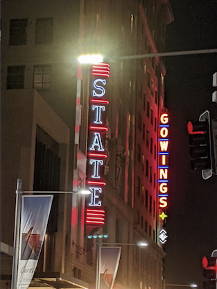
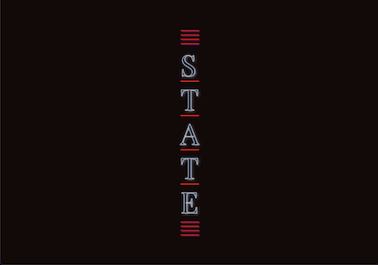
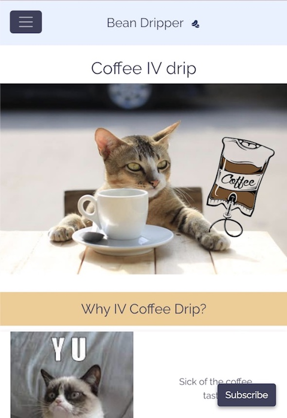

Yasmin Archibald, Jr Software Developer & Huge Nerd
I'm a Junior Software Developer keen to hit the ground running and kick-off my career with a bang! I thrive in the intersections of technology, creativity, and community.
I love participating in community events either by speaking at them, helping organise them, or just enjoying the talks and free pizza.
When I'm not writing code or hanging out with fellow nerds I'm usually tinkering with something artsy like teaching myself how to sew, play guitar, or ceramics.
Below you'll find my headshot, projects I've worked on and a list of my talks.
Projects
-
CSS Lab 1. STATE
 Walking to the station from the state library I saw a couple of neon signs and thought it would be a fun experiment to try to recreate them using CSS.
Codepen[ HTML, CSS ]
-
Only Shadows
My final project and the hardest thing I've ever done. I took the advice of my instructor at G.A and took on a passion project with a huge scope knowing it will never be quite finished.
Combining my history as a photographer, interest in generative art and storytelling, Only Shadows is a point and click adventure game based on a short story a friend of mine wrote. It's made using bubble images mapped onto the inside of three.js spheres.
GitHub App[ Three.js, JavaScript, HTML, CSS, Webpack ]
-
Image Manipulation Algorithm
This is an image manipulation algorithm I used to distort the images for Only Shadows. I needed to do it on the backend using node as my browser kept crashing because the images were so large.
GitHub[ Node, Canvas ]
-
Artsy.io

A live canvas app where you can draw with friends and strangers alike. Made in collaborative chaos, for collaborative chaos as this was a group effort.
I had the idea to make a collaborative art app weeks earlier, but was instructed that I should wait until the next project week when we've covered more of the relevant topics in class. When the time came around for our class to group up and build something as a team, I was lucky enough to have two people interested in making this with me.
GitHub App[ Websockets, Node.js, MongoDB, Express, Canvas ]
-
Bean Dripper
A 28-hour sprint collaboration with the Software Engineers and the UX designers at General Assembly. An app made for mobile keeping both the user's needs and the business in mind.
GitHub App Figma[ SCSS, Vue, Firebase, Figma Design ]
-
Dead Words
A collaborative story-telling app, and also the first project I got to code from start to finish and come up with the concept for.
It was during the making of this app that I learned how important it is to get normal people to test your website during development (as opposed to other developers). I had knocked out the MVP early in project week, and used nGrok to have my friends make a story together.
It was heart-warming to have the people I love use something I made, and I got important feedback that I used to direct the next features I would work on.
GitHub App[ Ruby on Rails, HTML, CSS ]
-
Tic Tac Toe

My first project at G.A. Tic-Tac-Toe. I opted to skip a lot of the visual stuff this time around and go straight for attempting an unbeatable A.I opponent. I failed at implementing the minimax algorithm, but it was also the first taste I got of really loving programming and seeing it as an art rather than just a means to an end.
GitHub App[ HTML, CSS, JavaScript ]